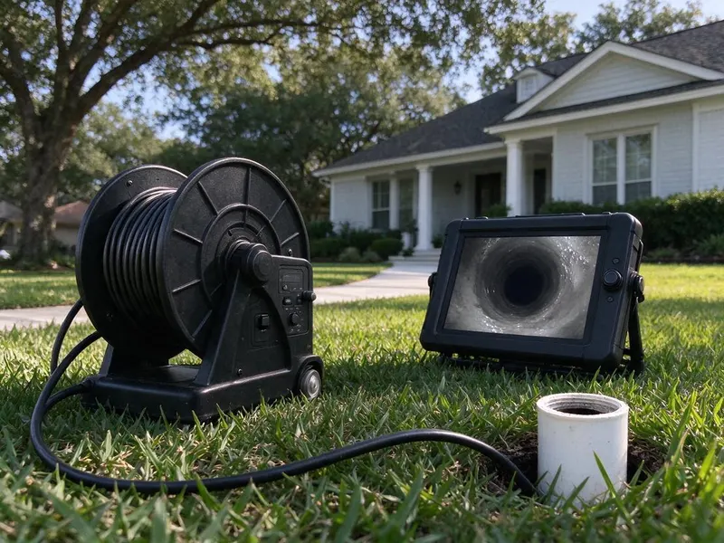
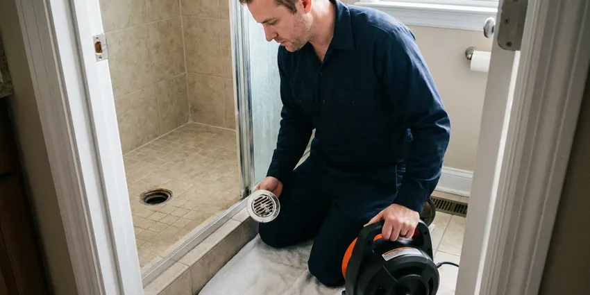
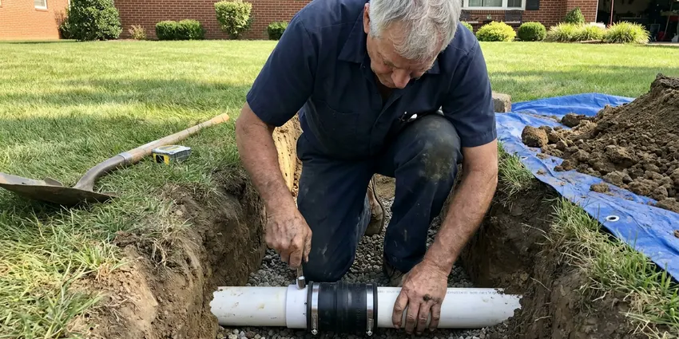

Sewer Cleaning in Plano, TX
DFJ Plumbing offers top-tier sewer cleaning services throughout Plano, TX. We tackle everything from minor clogs to major blockages in your main sewer line.
- Fast, Reliable Service
- Licensed, Experienced Plumbers
- Upfront Pricing
- Satisfaction Guaranteed

Need Expert Sewer Cleaning in Plano, TX?
Don't let a clogged sewer disrupt your home. Contact DFJ Plumbing for prompt, professional service.
Professional Sewer Cleaning for Plano, TX Homes
DFJ Plumbing specializes in thorough sewer cleaning for homes across Plano, TX. We understand the unique challenges Texas plumbing systems face, from expansive clay soils affecting pipes to the common issue of tree root intrusion in older sewer lines.
Our expertise includes:
- High-pressure hydro jetting for stubborn clogs
- Advanced camera inspections for precise diagnosis
- Safe removal of tree roots and debris

Additional Drain Services Services in Plano, TX
From stubborn kitchen clogs to main sewer backups, our drain services in Plano, TX restore full flow fast and keep it that way.


Drain Cleaning in Plano



Sewer Line Replacement near Plano


Customers
Why Choose DFJ Plumbing for Sewer Cleaning in Plano, TX?
Ignoring sewer issues can lead to costly repairs and health hazards. DFJ Plumbing provides timely and effective sewer cleaning to prevent minor blockages from escalating into significant problems.
- Local Expertise, DFJ Plumbing understands the specific plumbing challenges common to Plano, TX, including issues related to local soil conditions and tree species that often infiltrate sewer lines.
- Advanced Tools, We utilize state-of-the-art diagnostic and cleaning equipment, such as sewer cameras and hydro jetters, to accurately identify and clear blockages.
- Lasting Solutions, Our goal is not just to clear a clog, but to provide solutions that prevent its recurrence, saving you time and money in the long run.
Citywide Coverage
No matter where you are in Plano, our expert sewer cleaning team can reach you. We cover the entire metropolitan area, ensuring prompt service for every residential and commercial customer.
Experienced Team
Our plumbing technicians are highly experienced in all aspects of sewer cleaning, trained to handle the complex main lines of Texas homes. They continuously update their skills on the latest techniques and equipment.
Safety-First Approach
All sewer cleaning performed by DFJ Plumbing is done with the utmost attention to safety and compliance. We ensure that every job meets or exceeds all relevant plumbing codes in Plano, TX, guaranteeing a secure and compliant service.
Trusted Certified Plano Plumbing Services Professionals
At DFJ Plumbing, we take pride in providing licensed, certified plumbing services throughout Plano, TX. Backed by leading industry credentials, our experienced plumbers combine technical skill with genuine customer care. Whether it is repair, installation, or maintenance, we follow strict safety and quality standards to deliver lasting results you can trust.
Call Us Now PHCC Plumbing Contractor Recognition
PHCC Plumbing Contractor Recognition Better Business Bureau (BBB) Accreditation
Better Business Bureau (BBB) Accreditation Angi Certified Pro
Angi Certified Pro ISO 9001 Quality Management Certification
ISO 9001 Quality Management CertificationDependable Sewer Cleaning Services in Plano, TX
Residential Sewer Cleaning in Plano
Our residential sewer cleaning services address common issues like grease buildup, food debris, and hair that accumulate in household drain lines and eventually affect the main sewer. We use specialized augers and small-diameter hydro jetters to clear these blockages effectively. For homes in Plano, particularly older ones, preventative cleaning can save you from messy backups and costly repairs. We ensure your home's wastewater flows freely to the municipal sewer system.

Commercial Sewer Cleaning in Plano, TX
Commercial properties in Plano, TX often face more demanding sewer system usage, leading to frequent clogs from various sources. Restaurants, for example, deal with significant grease accumulation, while other businesses might experience issues from foreign objects. DFJ Plumbing provides robust commercial sewer cleaning solutions, utilizing heavy-duty hydro jetting equipment capable of clearing large diameter pipes and tough commercial-grade blockages quickly, minimizing downtime for your business.
Emergency Sewer Cleaning in Plano
A sudden sewer backup is a plumbing emergency that requires immediate attention. DFJ Plumbing offers emergency sewer cleaning services across Plano to quickly resolve critical blockages and prevent extensive water damage and health hazards. Our emergency response team is equipped to diagnose and clear severe clogs, often caused by tree roots or collapsed pipes, restoring your sewer function as fast as possible, even outside of regular business hours.
Tree Root Removal in Plano, TX Sewers
Tree roots are a common culprit for sewer line blockages, especially in Plano, TX where mature trees are prevalent. Roots seek out moisture and can infiltrate even tiny cracks in sewer pipes, growing and eventually blocking the entire line. DFJ Plumbing uses specialized root cutting tools attached to our drain augers and high-pressure hydro jetting to effectively remove these invasive roots, restoring flow and preventing further damage. We can also advise on long-term solutions to protect your pipes.
Hydro Jetting for Sewer Lines in Plano
For the most stubborn sewer line clogs, hydro jetting is the gold standard. This powerful technique uses high-pressure water streams to blast away grease, scale, mineral buildup, and even tree roots from the interior walls of your sewer pipes. DFJ Plumbing employs advanced hydro jetting equipment for sewer cleaning in Plano, ensuring a thorough cleaning that leaves your pipes virtually spotless, significantly reducing the likelihood of future blockages and extending the life of your sewer system.
Sewer Camera Inspections in Plano, TX
Before any major sewer cleaning, especially for recurring issues, a sewer camera inspection is crucial. DFJ Plumbing uses state-of-the-art waterproof cameras to snake through your sewer lines, providing a real-time view of the pipe's interior. This allows us to accurately locate the exact cause and position of a blockage, identify pipe damage like cracks or collapses, and determine the most effective cleaning method, saving time and preventing unnecessary excavation in Plano, TX.
Preventative Sewer Maintenance in Plano
Proactive maintenance is key to avoiding costly sewer emergencies. DFJ Plumbing offers preventative sewer cleaning services in Plano designed to keep your main line clear before problems arise. Regular hydro jetting or professional snaking can remove accumulating debris, grease, and mineral deposits, especially beneficial for homes with older plumbing or those prone to tree root intrusion. This helps maintain optimal flow and extends the lifespan of your entire sewer system.

Clogged Main Sewer Line Solutions in Plano, TX
A clogged main sewer line affects all drains in your home or business, often leading to multiple fixtures backing up simultaneously. This severe issue requires immediate and expert attention. DFJ Plumbing specializes in diagnosing and clearing main sewer line blockages in Plano, TX. We use powerful augers, hydro jetters, and camera inspections to identify the obstruction, whether it's roots, debris, or a structural issue, and implement the most effective solution to restore full drainage.
Sewer Cleaning Near Me in Plano, TX
When you search for 'sewer cleaning near me' in Plano, TX, DFJ Plumbing is your trusted local expert. We are deeply familiar with the local infrastructure and common plumbing issues affecting homes and businesses throughout the area. Our proximity means faster response times and a deeper understanding of your specific needs.
Our team of licensed plumbers is always ready to provide rapid, reliable sewer cleaning services across Plano. We pride ourselves on being the go-to local solution for any sewer blockage, ensuring that help is always just a call away for residents and businesses in Texas.
DFJ Plumbing at a Glance
- Licensed and insured plumbers serving Plano, TX
- 24/7 emergency service with same-day scheduling
- Clear written estimates, no hidden fees
- 4.9-star rated by 812+ Texas customers
Plano Map
Plano Information
- Population
- 290,190
- Area codes
- 469/972/214
- Service area
- Plano and communities within 40 miles
- Nearby
- Richardson, Allen, Frisco, Carrollton
Effective sewer cleaning is vital for homes in Plano, TX, especially given the expansive clay soils that can shift and stress underground pipes, making them vulnerable to cracks and root intrusion over time.
Expert Services
Trust our professionals for reliable DFJ Plumbing solutions in Plano, TX.
Our Specialized Plumbing Services in Plano, TX
At DFJ Plumbing, we provide a complete range of plumbing services across Plano, TX. From leak detection to full system installations, our team ensures fast, precise, and affordable service for both residential and commercial properties. Explore our core services below:


How Our Sewer Cleaning Process Works in Plano, TX
We follow a clear, step-by-step approach to sewer cleaning, from initial diagnosis to complete blockage removal, serving all of Plano, TX.
Request a Quote
Contact DFJ Plumbing at (737) 405-5978 to describe your sewer issue and schedule an appointment. We'll gather initial information to understand your needs.
On-Site Diagnosis
Our expert plumbers arrive at your Plano property, assess the situation, and often use a sewer camera to pinpoint the exact location and cause of the blockage.
Expert Cleaning
Based on the diagnosis, we'll employ the most effective cleaning method, such as snaking or hydro jetting, to thoroughly clear your sewer line and restore proper flow.
Frequently Asked Questions About Sewer Cleaning in Plano
The cost of sewer cleaning in Plano, TX can range from $200 for a minor clog cleared with a snake to $600 or more for complex hydro jetting or root removal. Factors like the severity of the blockage, the method required, and the accessibility of the sewer line all influence the final price. We provide upfront pricing before any work begins.
For standard sewer cleaning, such as snaking or hydro jetting to clear a blockage, a permit is typically not required in Plano. However, if the cleaning process uncovers a need for major sewer line repair or replacement, then permits from the city's permitting department would be necessary. We handle all necessary permits for larger jobs.
Generally, standard home insurance policies in Texas do not cover routine sewer cleaning or damage from gradual wear and tear. However, if a sudden, unexpected event like a burst pipe due to a specific peril causes sewer damage, it might be covered. It's best to check with your insurance provider directly.
We strongly advise against using chemical drain cleaners for sewer lines. These products are often ineffective against severe sewer clogs and can corrode pipes, especially older ones common in Plano, causing more damage. They can also pose a health risk to you and our plumbers during service.
Most standard sewer cleaning jobs in Plano can be completed within 1 to 3 hours, depending on the severity and nature of the clog. More complex issues, like extensive root removal or if a camera inspection is needed first, might take longer. We'll provide an estimated timeline during our initial assessment.
For most homes in Plano, an annual or bi-annual sewer cleaning is sufficient for preventative maintenance, especially if you have older pipes or mature trees nearby. If you experience frequent clogs, more regular cleaning might be necessary. Your plumber can recommend a schedule based on your specific situation.
DFJ Plumbing uses professional-grade equipment from reputable manufacturers known for their reliability and effectiveness. Our tools include Ridgids drain snakes and cameras, Spartan Machine hydro jetters, and other industry-leading brands to ensure we deliver the best possible sewer cleaning results in Plano, TX.
Drain cleaning typically refers to clearing clogs in smaller branch lines leading from individual fixtures, like sinks or tubs. Sewer cleaning, on the other hand, addresses blockages in the main sewer line that collects wastewater from all household drains and carries it to the municipal system. Sewer clogs affect all drains, while drain clogs are usually isolated.
What People Are Saying About Our Plumbing Experts?

Emily R.
I called DFJ Plumbing for plumbing repair, and the technician was fast, polite, and thorough. They explained the problem clearly and fixed it the same day. I will definitely hire them again. Highly recommended!
Plumbing Repair · Carrollton, TX
Daniel K.
A pipe burst at 11 pm and they actually answered. The plumber showed up within the hour, shut everything down, and had us back to normal the next morning. Could not ask for more.
Emergency Plumbing · Garland, TX
Robert G.
The trenchless sewer replacement saved our front yard. They walked us through the camera inspection footage first so we knew exactly what we were paying for.
Sewer Line Replacement · McKinney, TX
Mark T.
When our office needed drain cleaning, DFJ Plumbing provided quick, reliable service. The plumber arrived on time and made sure every drain flowed perfectly before leaving. Very satisfied.
Drain Cleaning · Plano, TXJames P.
Our commercial plumbing system had a leak under the sink, and DFJ Plumbing handled it professionally. The plumbers arrived quickly and restored everything without disruption to our customers.
Commercial Plumbing · Garland, TX
Laura S.
I scheduled a water heater replacement, and the team made the process smooth and affordable. The new unit works perfectly, and they cleaned up after completing the job.
Water Heater Replacement · Plano, TX